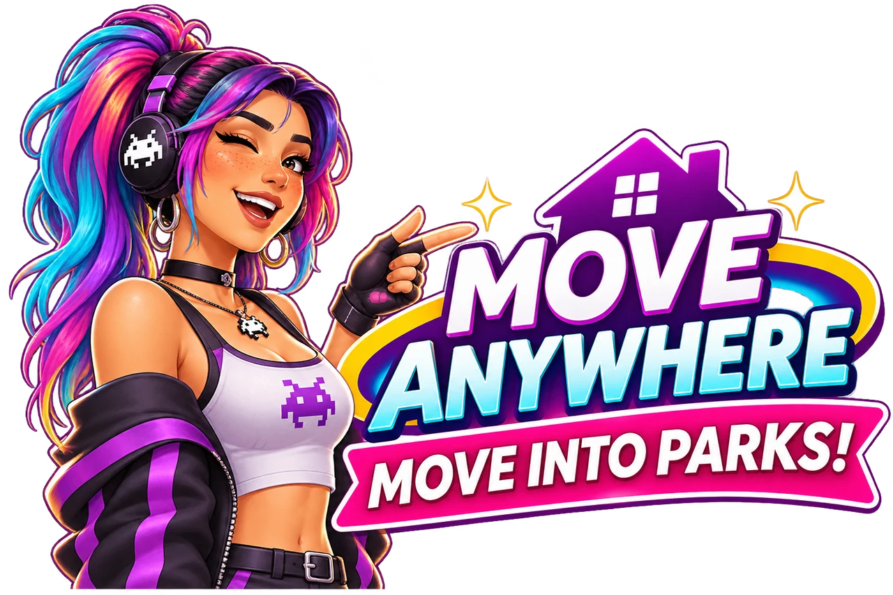

In testing
MoveAnywhere
Give your household a home in a park or another lot you choose. MoveAnywhere lets you make the move through Manage Worlds, then settle in and build as you would on a residential lot.
- The lot becomes a Residential lot that you can edit.
- You use your household's own funds in build mode.
- The usual build catalog is available, rather than the limited Park Items catalog.
- You can move in without getting stuck on the "Building Lot" screen.

You can also move from inside the game or choose a lot where another household lives. Evicted households are rehoused when a suitable empty home is available. Read what happens during a move or eviction.